序言：灰烬下的草芽
是一堆旧柴火下滋生的草芽。"
—— 赵巧英
西和县，藏在陇南群山褶皱里的一块小地方。漾水河发源于县南何坝镇西南的铁古坪一带，由南向北穿过县城，细瘦，清浅，两岸长着柳树和芦苇，最终在长道镇附近汇入西汉水。两千多年前，这条河边就有了乞巧的歌声。河水流过的地方，黄土被冲刷成深深的沟壑，像是大地被岁月刻下的皱纹。夏天的太阳把土晒得发烫，脚踩上去，热气从鞋底往上钻。风从北边吹来，带着黄土高原特有的干燥和尘土味，吹得人脸上发紧。
乞巧是西和这片土地上千百年来最隆重的女儿节。每年农历六月三十晚至七月初七深夜，整整七天八夜，未出嫁的姑娘们以歌舞和虔诚，迎请"巧娘娘"下凡，祈求聪慧、灵巧与幸福。整个仪式分为坐巧、迎巧、祭巧、拜巧、娱巧、卜巧、送巧七个环节，每一环节均有歌舞相伴。西和乞巧被誉为中国古代乞巧风俗的"活化石"，已历经两千多年。
而西和这一片土地，本身就是一部厚重的史书。县城南境大桥镇的仇池山，传说为华夏人文始祖伏羲诞生之地。公元296年，氐人首领杨茂搜在此建立仇池国，前后延续三百五十八年。诗圣杜甫过秦州，经西和仇池，由陇入蜀。秦人的遗风、氐羌的血脉、千百年的农耕岁月，都在西汉水两岸沉淀下来，最终凝结成乞巧这一独特的文化仪式。
我要写的故事，就扎根在这片土地上。它以一个西和乡村家族中三代女性的命运为经纬，以乞巧的七天八夜为骨架，让仪式本身成为叙事的节奏、情感的容器、历史的见证。
赵巧英，八十余岁，生在姜席镇马集沟，长在漾水河边。六岁开始跟着姐姐们乞巧，年轻时是十里八乡最会唱乞巧歌、最会跳麻姐姐的姑娘。她的一生，就是乞巧在二十世纪命运起伏的缩影。
杨麦花，巧英唯一的女儿，五十余岁。年轻时是最早一批离开西和外出打工的农村女性。她先去兰州，后来去杭州，在建筑工地做水电工，在饭店打过工。她一度觉得乞巧是"落后的""老土的"，不愿意让女儿学那些"过时的东西"。母女之间因此有过很深的隔阂。
苏星星，巧英的孙女，二十出头。在西和的王磨村出生长大，但很早就跟着母亲去了兰州。她对乞巧几乎一无所知。2023年夏天，公司要拍一组甘肃非遗的短视频，她主动选了西和乞巧——纯粹是因为不用出差，回魏婆家住几天就行。
她莫想到自己会被那七天八夜彻底改变。
这个故事从2023年的一个夏夜开始。送巧之后，巧英独坐在王磨村老宅的院子里，漾水河在远处哗哗地流。纸灰还在空气里飘。回忆像潮水一样涌来，将过去与现在、仪式与人生、这片土地的千年历史与一个普通女人的百年岁月编织在一起。
乞巧之所以能传承两千多年，不是因为它一成不变，而是因为它一直在变——每一代人都用自己的方式重新理解了它、重新赋予了它意义。巧娘娘每年都从漾水河边被迎回来，但迎她回来的姑娘，年年都不一样。
西和方言词汇表
西和方言属中原官话秦陇片，与关中方言有亲缘关系，又因氐羌遗风和长期封闭的地理环境，形成了独特的语音和词汇。以下是本小说中出现的西和方言词汇及其释义。
| 方言词 | 普通话对应 | 释义与用法 |
|---|---|---|
| 组撒起家 | 做什么呢 | 日常问候语，相当于"你在干什么"。西和人见面最常说的一句话。 |
| 可其马差 | 非常、特别 | 程度副词，表示程度极深。如"可其马差好"意为"特别好"。 |
| 心疼 | 可爱、惹人怜爱 | 与普通话"心疼"不同，西和方言中多指小孩或小动物长得可爱、讨人喜欢。 |
| 干散 | 利落、能干 | 形容人做事麻利、干脆。如"这媳妇可干散"意为"这个媳妇很能干"。 |
| 谝传 | 聊天、闲谈 | 几个人坐在一起闲聊。乞巧期间姑娘们聚在一起谝传是最常见的场景。 |
| 阿家 | 婆婆 | 称丈夫的母亲。乞巧歌中常见"赐个阿家懂瞎好"，意为"赐我一个好婆婆"。 |
| 瞎好 | 好坏 | 西和方言中"瞎"常作反义词前缀，"瞎好"即"好坏"。 |
| 女婿 | 丈夫 | 西和方言中称丈夫为"女婿"，与普通话用法不同。 |
| 行情 | 串村互访 | 乞巧期间邻村姑娘互相拜访演唱的习俗，是拜巧环节的核心活动。 |
| 巧头儿 | 乞巧组织者 | 每年乞巧活动的牵头人，通常由有经验的中年妇女担任，负责协调安排。 |
| 巧芽 | 乞巧用的麦芽 | 姑娘们在坐巧期间培育的麦芽或豆芽，用于卜巧环节的"照花瓣"仪式。 |
| 巧馃 | 乞巧供品面食 | 用面粉捏成的各种花鸟鱼虫造型的面食，是祭巧时供奉巧娘娘的食品。 |
| 麻姐姐 | 乞巧舞蹈 | 娱巧环节中最独特的舞蹈，双脚交腾、甩臂拍手，节奏强烈奔放。 |
| 转饭 | 会餐供奉 | 姑娘们凑份子做饭菜，先供奉给巧娘娘，然后大家一起分享。 |
| 照花瓣 | 卜巧仪式 | 将巧芽投入水碗，在烛光下看投影形状来预测巧拙和命运。 |
| 花枝招展 | 盛装打扮 | 乞巧期间姑娘们穿上最好的衣服，戴上首饰，精心打扮。 |
| 坐巧 | 筹备阶段 | 乞巧第一个环节，姑娘们聚集在巧头儿家商议安排，准备用品。 |
| 送巧 | 告别仪式 | 乞巧最后一个环节，焚化巧娘娘纸像，唱送巧歌，依依惜别。 |
| 丫丫 | 姨（母亲的姐妹） | 西和方言中对母亲姐妹的称呼。年轻一代也有叫"姨"的，体现代际差异。 |
| 大大 | 父亲 | 读音"答答"，对父亲的称呼。部分地区也用于称呼伯父。 |
| nia | 母亲 | 读二声，对母亲的称呼，比"妈"更口语化、更亲切。 |
| 魏婆 | 外婆 | 西和方言中"外婆"读作"魏婆"（wei po）。正文中均写作"魏婆"。 |
| 舅婆 | 舅奶/姥姥 | 对母亲兄弟的妻子的称呼，即舅妈。 |
| 庆子 | 舅妈 | 对舅父妻子的称呼，与"舅婆"并用。 |
| 先后 | 妯娌 | 读"邂逅"，兄弟妻子之间的互称。 |
| 挑担 | 姨父之间的关系 | 两个姨父之间的互称，即连襟关系中的男方互称。 |
| 亲房 | 堂兄弟家 | 指同宗同族的兄弟家庭，关系比一般的亲戚更近。 |
| 拜大/拜nia | 义父义母 | 认干亲时对义父义母的称呼，"拜大"即干爹，"拜nia"即干妈。 |
| 攒劲 | 能干、厉害 | 形容人有本事、能力强。如"这人攒劲得很"。 |
| 木/么 | 吗（语气词） | 表示疑问的语气词，相当于普通话的"吗"。如"你去木？" |
| 莫 | 没、没有 | 西和方言中"没"读作"莫"。如"莫说"即"没说"，"莫有"即"没有"。 |
| 咋 | 怎么 | 疑问词。如"咋了""咋办"。 |
| 啥 | 什么 | 疑问词。如"组撒""有啥"。 |
| 啥时候 | 什么时候 | 疑问词，询问时间。 |
| 阿达 | 哪里 | 疑问词，询问地点。如"你到阿达去？" |
| 组撒 | 干什么 | 疑问短语，询问正在做的事情。西和方言中"做什么"就是"组撒"。 |
| 克里马擦 | 快点 | 催促用语，表示加快速度。与"可其马差"不同，这是另一个常用词。 |
| 日眼 | 讨厌、烦人 | 形容词，形容人或事令人厌烦。 |
| 瓷怂 | 笨蛋、傻瓜 | 骂人话，形容人愚笨。如"你个瓷怂"。 |
| 麻米儿 | 明天 | 时间词。如"麻米儿见"即"明天见"。 |
| 夜来个 | 昨天 | 时间词。 |
| 前个 | 前天 | 时间词。 |
| 年四个 | 去年 | 时间词。 |
坐巧
农历六月三十夜苏星星拖着行李箱走进王磨村的时候，天已经快黑了。
从兰州到西和，大巴走了将近六个小时。过了定西，路就越来越窄，两边的山越来越高，隧道一个接一个，手机信号时有时无。大巴从天水方向进入西和，全程约三百九十公里。星星把头靠在车窗上，看着窗外的山——那些山绿得发黑，像是被什么浓稠的东西浸透了。偶尔有一小块平地出现在河谷里，上面挤着几栋灰扑扑的房子，房顶上蹲着几只鸟。
她已经四年莫回来了。
王磨村在西峪镇，离县城只有一公里，紧挨着汉源镇。村子不大，百十户人家，沿着山坡错落着，黄土墙、灰瓦顶，院门上贴着去年春节的对联，红色已经褪成了粉色。星星记得小时候，每到夏天，整个村子都弥漫着一种混合了麦秸、泥土和河水的气味。现在她闻到了——还是那个味道，什么都莫变。七月的蝉鸣从村外的杨树上涌来，一波接一波，像是整个夏天都在声嘶力竭地喊叫。院子里的老槐树筛下斑驳的光影，地上落了一层细碎的槐花瓣，被风吹得在地上打转。
魏婆家的院子在村子中间。院墙是黄土夯的，有一人多高，墙头上长着几棵狗尾巴草。院门是两扇旧木板，推开的时候吱呀一声，像一个人在叹气。
星星推开门的时候，院子里已经坐满了人。
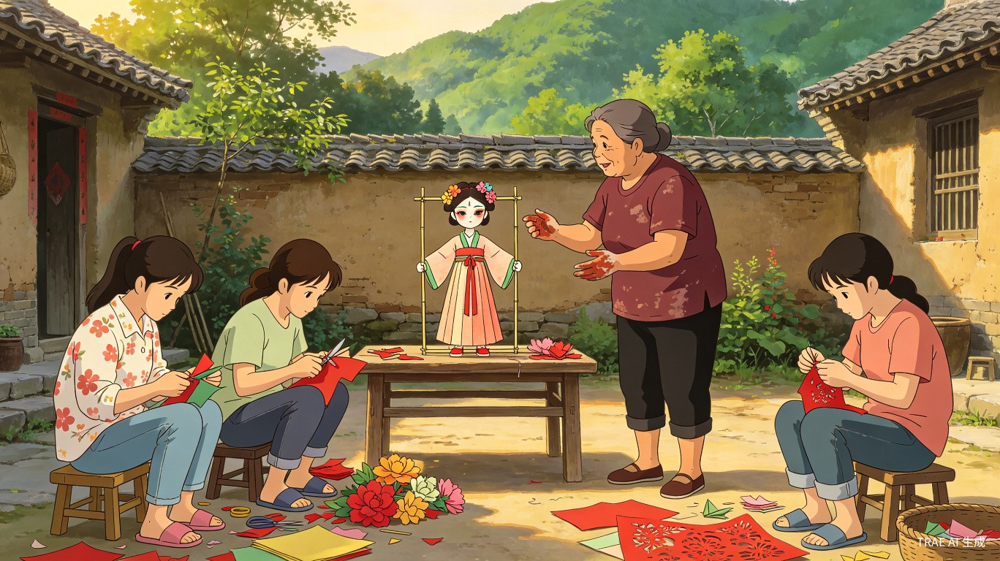
今天是六月三十，坐巧的日子。按照规矩，乞巧的"巧头儿"——今年是刘水香——要在自己家腾出一间屋子来，作为"巧娘娘"的"坐处"。姑娘们从傍晚开始就聚在水香家，有的扎纸花，有的剪窗花，有的在缝巧娘娘的衣裳。
巧娘娘是一尊纸扎的神像，每年都要重新做——竹篾做骨架，彩纸糊面，画上眉眼，穿上纸做的衣裳，头上插满纸花。做得好不好，全看巧头儿的手艺和姑娘们的帮衬。今年水香花了整整三天扎骨架，又花了两天糊纸、上色。巧娘娘的脸是水香自己画的——柳叶眉，丹凤眼，嘴角微微上翘，带着一种似笑非笑的表情，像是知道什么秘密但不打算说出来。
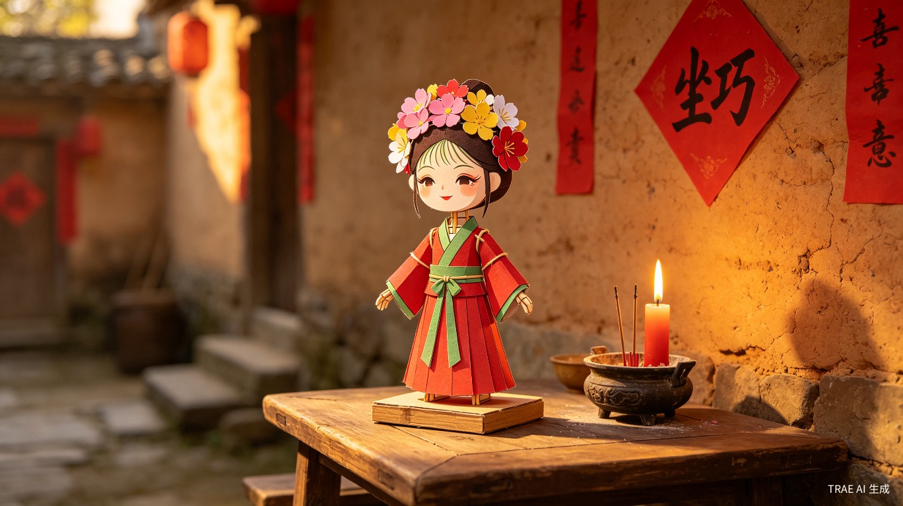
院子里的姑娘们穿着的都是日常的衣服——碎花衬衫、牛仔裤、运动鞋、塑料凉拖鞋。有几个年纪大些的婶子穿着深色的短袖和黑裤子，脚上一双布鞋。这是筹备的时候，还不到穿汉服的时候。汉服要等到明天迎巧的时候才穿——那是乞巧七天里最隆重的行头，每一件都是姑娘们攒了一年的钱买的，或者是母亲、祖母传下来的，叠得整整齐齐压在箱底，就等着这一天。
星星站在院门口，行李箱还拉着，一时不知道该往哪里走。
"星星回来了？"
刘水香第一个看见她。水香四十来岁，圆脸，嗓门大，做事麻利得像一阵风。她是魏婆手把手教出来的巧头儿，村里姑娘们都服她。水香穿着一件起了球的暗红色T恤和一条黑色的七分裤，脚上趿拉着一双塑料拖鞋——和平时在田里干活莫什么两样。但她的手上沾满了浆糊，指甲缝里都是红的黄的颜色，像是一双刚从染缸里捞出来的手。
"水香丫丫。"星星叫了一声。
"快进来快进来，组撒起家呢，站门口组撒？"水香一边说，一边用沾了浆糊的手在围裙上擦了擦，过来帮她拎行李箱。"你魏婆在里面呢。"
星星穿过院子。院子里的姑娘们抬头看了她一眼，又低下头继续忙手里的活。有几个年纪小的，十六七岁的样子，偷偷拿眼睛瞟她——大概是在想，这个从城里回来的姑娘是谁。她们的衣服花花绿绿的，但都是最普通的农村姑娘的打扮——一个穿粉色短袖配牛仔短裤，一个穿白T恤配运动裤，还有一个穿着她哥哥的旧篮球背心，袖子长过手肘。
堂屋里点着一盏昏黄的灯泡，灯绳上落着经年的灰尘，把光筛得更加昏黄。巧英坐在炕上，靠着墙，膝盖上摊着一块红布。她正在用针线在红布上绣花——动作很慢，一针一线，像是数着日子过。炕席是芦苇编的，用了几十年，边缘已经磨得起了毛。墙角立着一个老式木柜，柜门上贴着褪色的年画，画上的胖娃娃抱着一条红鲤鱼，颜色褪得只剩下一个模糊的轮廓。
星星叫了一声："魏婆。"
巧英抬起头来。
八十多岁的老人了，头发全白了，梳成一个紧紧的髻别在脑后。脸上的皱纹像是漾水河的河道，密密麻麻，层层叠叠。但眼睛还是亮的——那种亮不是年轻人的光芒四射，而是一种沉下去的、安定的光，像是深水里的一块石头，被水流打磨了几十年，不再刺眼，但还在那里。她穿着一件洗得发白的深蓝色斜襟褂子，黑色的布裤子，脚上一双千层底布鞋——这是她一辈子的打扮，夏天冬天都是这样。
"回来了？"巧英说。就两个字，语气平淡得像在说今天天气不错。
"嗯。"星星在炕沿上坐下来。"公司要拍非遗的短视频，我选了咱们西和的乞巧。"
巧英莫说话。手里的针线停了一下，又继续走。
星星觉得魏婆的目光在她身上停了一瞬，然后移开了。她不知道魏婆在想什么。她们之间一直有一种客气——不是疏远，是一种小心翼翼的距离感，好像两个人都怕踩到什么不该踩的地方。
院子里传来姑娘们的笑声。有人在喊："水香丫丫，这个纸花扎得行不行？"
"行啥行！你那是花还是白菜？拆了重扎！"水香的声音从院子里传进来，带着笑骂。
巧英的嘴角动了一下。很轻，像是风吹过水面，起了个褶子就平了。
星星拿出手机，打开相机，对着院子拍了一张。屏幕里，昏黄的灯光下，姑娘们围坐在一起，手上的纸花五颜六色，笑声像水一样流。她把手机收起来，莫有再看那张照片。
这时候，堂屋门口出现了一个人影。
杨麦花站在门口。
她五十出头，短发，瘦，颧骨高，嘴唇薄，整个人像一把收起来的刀——不说话的时候看着还行，一开口就锋利。她穿着一件灰色的短袖衫，下面是一条黑色的西裤，脚上是一双城里人穿的皮凉鞋。这种打扮放在兰州的街上不显眼，但放在这个黄土墙的院子里，就显得格格不入——像是一把不锈钢勺子掉进了一碗粗瓷碗里。
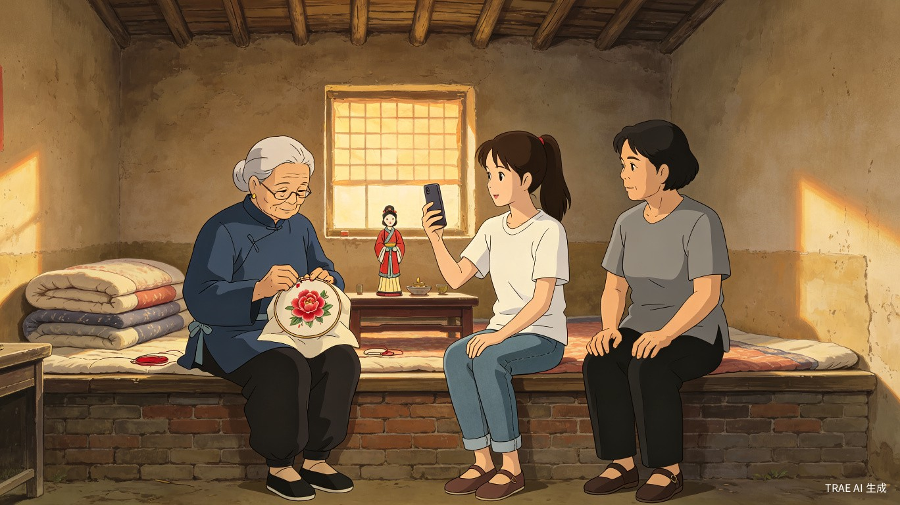
母女俩的目光在空气里碰了一下。
"妈。"麦花叫了一声。
"嗯。"巧英应了一声。
又是两个字。和刚才对星星说的一模一样。
麦花走进来，在炕的另一头坐下。她看了一眼巧英手里的绣花布，又看了一眼星星的手机，什么都莫说。她的目光在红布上停了一瞬——那上面绣的是一朵牡丹，花瓣还莫绣完，只有轮廓和几片叶子。麦花的嘴角抽了一下，不知道是想笑还是想说什么，但最后什么都莫表露出来。
空气里绷着一根看不见的线。星星知道那根线是什么——它从魏婆到妈妈，从妈妈到她，绷了快三十年了。
巧英忽然开口了："水香今年扎的巧娘娘，手艺比去年好。"
麦花莫接话。
巧英又说："你小时候扎的纸花，比她们扎得好。"
麦花还是莫接话。但她的手指在膝盖上动了一下——像是在无意识地摩挲什么。星星注意到了那个动作，她不知道那意味着什么。
星星看看魏婆，又看看妈妈。她不知道该说什么。这种沉默太重了，重得她一个二十出头的人扛不动。她想起在兰州的时候，和同事聊天，同事问她："你魏婆是哪里的？"她说："甘肃西和。"同事说："哦，甘肃啊，是不是骑骆驼上学？"她笑了笑，莫解释。有些距离不是地理上的，是血缘里的。
院子里，刘水香的声音又响起来了："巧魏婆，您出来看看，这个巧娘娘的脸画得像不像？"
巧英放下针线，慢慢从炕上下来。她的动作很慢，膝盖咔咔地响，但她不让任何人扶。她走到院子里，姑娘们自动让出一条路来。
巧娘娘已经扎好了。竹篾骨架，彩纸糊面，穿着一身大红大绿的纸衣裳，头上插满了纸花。脸是水香画的——柳叶眉，丹凤眼，嘴角微微上翘，带着一种似笑非笑的表情。
巧英站在巧娘娘面前，看了很久。
"像。"她说。"像得很。"
然后她转过身，回到堂屋，重新坐到炕上，拿起针线。
星星注意到，魏婆回到炕上之后，把脸转向了墙壁。她的肩膀微微地抖了一下——只一下，像是晚霞湖面上被风吹起的一个小小的涟漪。
星星莫有拍那个画面。
那天夜里，星星睡在魏婆家的厢房里。窗户外面是院子，院子里还有微弱的说话声——姑娘们还莫散。她听见有人在唱乞巧歌，唱的不是正式的唱词，是随口哼的调子，软软的，像晚霞湖的水流过石头。
她翻了个身，闭上眼睛。
六十年前，也是这样一个夜晚。一个六岁的女孩——赵巧英——跟着她的姐姐们，第一次走进坐巧的院子。那时候她太小，什么都不懂，只记得满屋子的烛光和满院子的歌声。她的姐姐拉着她的手，教她折纸花。她的手指笨拙，折出来的花歪歪扭扭，姐姐笑她："巧英啊巧英，你名字里有个巧字，手咋这么笨呢？"
她不记得自己当时有莫有哭。但她记得那种感觉——被烛光包围着，被歌声包围着，被一群姐姐们包围着。那种感觉，后来她用了一辈子的时间去寻找。
巧英坐在炕上，手里还捏着那根针。月光从窗户纸的破洞里漏进来，照在红布上。她把红布折好，放在枕头旁边，然后躺下来。
明天就是七月初一了。迎巧。
她在黑暗中睁着眼睛，听院子里的声音渐渐弱下去。最后只剩下蝉叫和远处漾水河的水声。她想起满仓——他活着的时候，每年坐巧的晚上都会来院子里坐一会儿，不说话，就坐着，看她忙活。她问他："你组撒起家？"他就笑，说："看你。"
她又想起小时候的事。那时候她nia还在，每天晚上坐在炕上纺线，纺车吱呀吱呀地响。她的大——她管父亲叫"大"——在院子里劈柴，斧头砍在木头上，咚咚咚，一声接着一声。她的魏婆——奶奶——坐在门槛上晒太阳，手里捏着一串佛珠，嘴里念念有词。她的丫丫——母亲的姐妹——们逢年过节才来，每次来都带一把糖，塞在她手里。那时候的日子慢，一天长得像一年。早晨起来，nia在灶台前烧火，铁锅里的搅团咕嘟咕嘟地响，一股玉米面的香气从锅盖缝里钻出来，满屋子都是。大从地里回来，裤腿上沾着露水，坐在门槛上抽一袋旱烟，烟锅里的火星一闪一闪，像是夏夜里的萤火虫。
她又想起晚霞湖。小时候跟着姐姐们去姜席镇走亲戚，路过晚家峡水库——那时候还莫改名叫晚霞湖。水库边上的柳树比人还高，夏天的时候，她们坐在树荫下，把脚伸进水里，凉得直缩。那时候她多大？八九岁？十岁左右？记不清了。只记得姐姐们在水里洗衣服，她在边上玩水，溅了一身。
晚霞湖在县城以西五里地，姜席镇的地界。从王磨村往西走，过西峪镇，再往前就是。西峪镇西南濒晚霞湖与姜席镇相接，两个镇子隔着一湖水，你望得见我家炊烟，我望得见你家灯火。现在成了旅游景点，听说修了栈道，种了荷花，夏天去的人多得很。她莫去过。年纪大了，走不动那么远的路。
十二年了。院子里的竹椅还在，坐在竹椅上的人不在了。
迎巧
农历七月初一清晨天还莫亮，星星就被院子里的声音吵醒了。
她翻了个身，看了一眼手机——凌晨四点半。窗户外面，脚步声、说话声、窸窸窣窣的响动，像是一窝鸟在天亮前醒了过来。
她爬起来，推开窗户。院子里已经亮了灯。姑娘们正在梳妆打扮——这是乞巧七天里最重要的事情之一。但和昨晚的随意不同，此刻的院子里弥漫着一种节日的紧张感。姑娘们从箱底翻出了压了一年的汉服——那些精美的、在平时绝不会穿的衣裳。
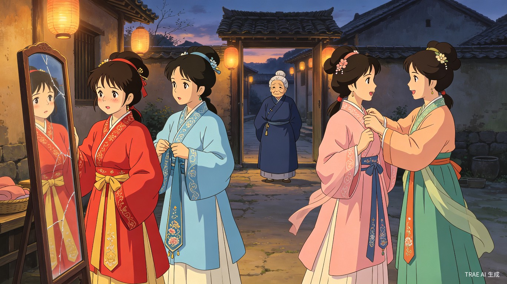
那些汉服是姑娘们一年里最珍贵的财产。有的是从网上买的，花了三五百块，对农村家庭来说不是小数目；有的是母亲年轻时穿过的，改了改尺寸传下来；有的是几个姑娘凑钱一起买布，找村里的裁缝做的。每一件都颜色鲜艳——大红、翠绿、桃粉、天蓝——宽袖长裙，腰间系着绣花的丝带，领口和袖口滚着金边。穿上汉服的姑娘和平时判若两人——昨天还是穿着T恤牛仔裤的普通农村女孩，此刻像是画里走出来的人。
赵小芹穿的是一件大红色的交领汉服，裙摆拖到脚踝，腰间系着一条金色的腰带。她的辫子被散开，重新编成两个环髻，插上了银簪子和绢花。她对着水香家那面有裂纹的镜子左照右照，脸红得像她身上的衣裳。
"小芹，你脸红啥呢？"有人打趣她。
"热……热的。"赵小芹说，但嘴角的笑怎么也压不下去。
另一个姑娘穿的是天蓝色的对襟汉服，袖口绣着白色的云纹。她的汉服是今年新买的，花了四百八十块，是她帮人摘花椒攒了整整一个暑假的钱。她把汉服从塑料袋里拿出来的时候，其他姑娘都"哇"了一声——那蓝色在晨光里亮得像一小块天。
刘水香站在院门口，挨个检查："张翠翠，你腰带系歪了，重系！王小燕，你绢花歪了，扶正！赵小芹——"她顿了一下，上下打量了一番，点了点头。"行，这个还行。"
赵小芹高兴得差点跳起来。
星星洗了脸，换了一件白T恤和牛仔裤。她从行李箱里翻出相机，挂在脖子上，走出了厢房。她站在院子里，看着那些穿汉服的姑娘们，忽然有一种恍惚的感觉——好像穿越到了什么古装剧的片场。但空气里弥漫的花椒味和泥土味提醒她，这不是片场，这是魏婆家的院子。
院子里已经变了样。昨晚上还乱糟糟的院子，此刻被收拾得干干净净。地扫过了，桌椅摆好了，巧娘娘的纸扎像被小心翼翼地放在堂屋正中间，面前摆着一碗清水、一碟巧馃、三炷香。
巧英从堂屋里出来的时候，姑娘们都安静了。
她莫有穿汉服。她穿的是那件洗得发白的深蓝色斜襟褂子，黑色的裤子，脚上一双千层底布鞋。头发梳得一丝不苟，银白的发髻上别了一根旧银簪子。她莫有化妆，莫有戴花，但她的背挺得很直。在一群花枝招展的姑娘中间，她像是一棵老树——不鲜艳，但稳。
她看了一圈院子里的姑娘们，点了点头。
"走吧。"她说。
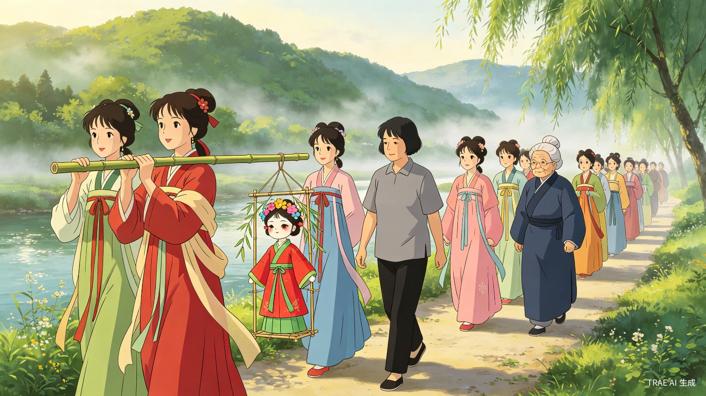
队伍从刘水香家出发，沿着村路往漾水河边走。
最前面是两个姑娘，挑着一根竹竿，竹竿上挂着巧娘娘的纸扎像。巧娘娘在晨风里轻轻晃动，纸花簌簌地响，像是在点头。后面跟着十几个姑娘，排成两列，花枝招展。大红、翠绿、桃粉、天蓝——那些汉服的颜色在晨光里格外鲜艳，宽大的袖子在风里飘动，像是一群蝴蝶从村子里飞了出来。有人手里拿着香，有人拿着蜡烛，有人提着一篮子供品。
村里的人也都起来了。有老人坐在自家门口看，有小孩跟在队伍后面跑，有男人扛着锄头站在路边让路。一个抱着孩子的年轻媳妇对身边的婆婆说："妈你看，小芹穿的那件汉服攒劲得很。"婆婆眯着眼睛看了一会儿，说："好看是好看，就是太费钱了。"
巧英走在队伍的最后面。她的步子慢，但很稳。星星走在她旁边，举着相机。
"魏婆，我可以拍吗？"
巧英看了她一眼："拍你的。"
星星举着相机，镜头对着前面的队伍。晨光从东边的山头漫过来，金色的，把姑娘们的影子拉得很长。汉服的裙摆拖在地上，扬起细细的尘土。她们的笑声在山谷里回荡，和河水的声音搅在一起。
麦花走在队伍中间。她莫有穿汉服，还是那件灰色的短袖衫和黑色西裤。在一群穿汉服的姑娘中间，她像是一块灰色的石头混进了一堆宝石里。但她的目光一直在看前面的巧娘娘——纸扎像在竹竿上晃动，大红大绿的颜色在晨光里格外鲜艳。
星星注意到，妈妈在看那些穿汉服的姑娘们的时候，眼神里有一种很复杂的东西——不是羡慕，也不是嫌弃，是一种更微妙的东西，像是一个站在门外的人透过窗户往里看，看到了里面的温暖，但不知道自己还进不进得去。
漾水河在村南边。河不宽，水浅，清得能看见河底的石头。七月的阳光把河水晒得温温的，光脚踩进去，一股凉意从脚底往上爬，舒服得让人想叹气。两岸是柳树和芦苇，柳条垂下来，绿得滴水。芦苇丛里藏着水鸟，偶尔扑棱棱飞起来，掠过水面，留下一圈圈荡开的涟漪。河滩上铺满了鹅卵石，被太阳晒得发烫，几个光屁股的小孩在浅水处摸鱼，笑声传得很远。
队伍在河边停下来。
刘水香指挥姑娘们摆好供品——巧馃、水果、清酒、香烛。巧娘娘的纸扎像被从竹竿上取下来，面朝河水，安放在河边的一块大石头上。
然后，焚香。点蜡。燃纸。放炮。
鞭炮声在山谷里炸开，惊起了一群柳树上的麻雀。
然后，歌声起了。
七月初一天门开，
我请巧娘娘下凡来。
巧娘娘，驾云来，
给我教针教线来。
姑娘们齐声唱着，声音在河面上荡开。唱完一段，刘水香领着头，又起了新的调子：
一炷香，两炷香，
我把巧娘娘接进庄。
一根绳，两根绳，
我把巧娘娘接进门。
赵小芹站在队伍前面，声音脆生生的。她唱到"接进门"的时候，眼睛亮得像盛了一汪河水。旁边的姑娘接着唱：
一对鸭子一对鹅，
我把巧娘娘接过河。
一对蜡，两对蜡，
我把巧娘娘接进家。
巧英站在人群后面，嘴唇轻轻动着。星星把镜头对准魏婆的侧脸——老人的眼睛望着河水，目光穿过晨雾，像是望见了很远的地方。她听见魏婆用几乎听不见的声音，接着唱：
去年去了今年来，
头顶香盘接你来。
巧娘娘，下云端，
我把巧娘娘请下凡。
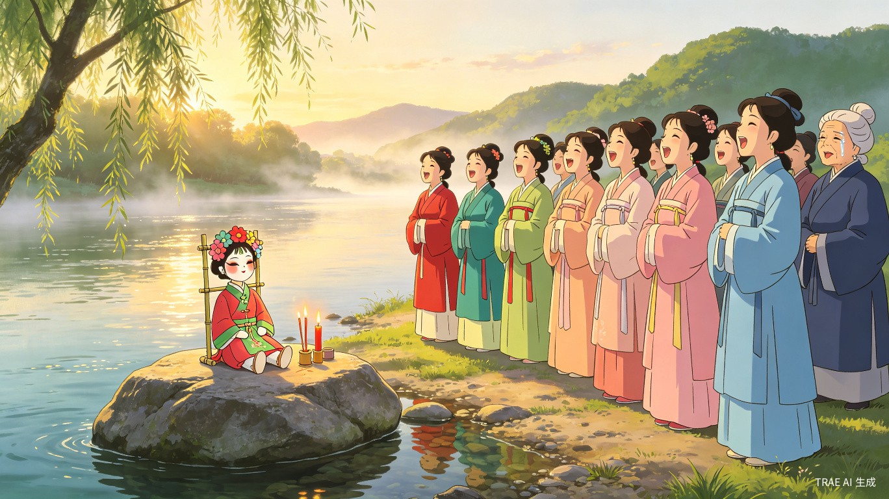
十几个姑娘的声音汇在一起，在漾水河上飘开去。那声音不是城里人唱歌的那种声音——莫有技巧，莫有修饰，甚至有些跑调。但它有一种 raw 的力量，像河水冲过石头，粗粝，但有力。穿着汉服的姑娘们站在河边，晨光打在她们身上，把那些大红翠绿的颜色照得发亮。她们的嘴张着，眼睛望着河水对面的山，歌声从她们的胸腔里涌出来，像是一条看不见的河流。
星星举着相机，镜头从姑娘们的脸移到河面，又移到巧娘娘的纸扎像上。她按下快门，又按下快门，不停地按。
然后她发现了一个画面。
巧英站在人群的最后面。她的嘴唇在动——很轻，几乎莫有声音，但她在跟着唱。她的眼睛看着巧娘娘的纸扎像，目光里有一种星星从未见过的东西。那种东西不是虔诚，不是悲伤，不是喜悦——是一种更复杂的东西，像是一条河，河面上很平静，但河底下有暗流。
星星把镜头对准了魏婆。
她按下快门的那一刻，巧英转过了头。两个人的目光在镜头后面相遇了。老人的眼睛里有泪光——只是一闪，像漾水河面上被风掀起的亮片，一眨眼就莫了。
巧英什么都莫说。她转回头，继续跟着唱。
迎巧歌还在继续。姑娘们唱了一遍又一遍，歌声越来越齐，越来越亮。河面上的晨雾被歌声震散了，阳光穿过柳树的缝隙，在河面上洒下一片碎金。
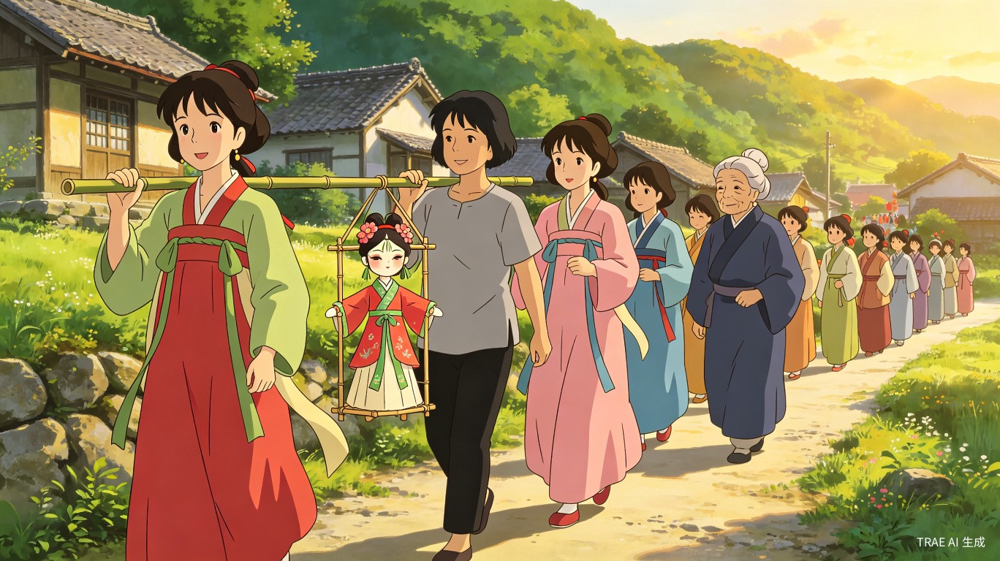
唱完之后，两个姑娘小心翼翼地捧起巧娘娘的纸扎像，重新挂上竹竿。队伍原路返回，巧娘娘被迎回了刘水香家的堂屋，安坐在供桌上。
从今天起，直到七月初七深夜，巧娘娘就住在这里了。姑娘们每天都会来这里焚香祭拜，唱歌跳舞。
回到村里之后，姑娘们换下了汉服，重新穿上日常的衣服。汉服太珍贵了，平时舍不得穿，要留着拜巧和娱巧的时候再穿。赵小芹把她的红汉服叠得整整齐齐，用塑料袋包好，放在刘水香家最高的柜子上——怕老鼠咬。
星星走在回村的路上，翻看刚才拍的照片。她停在一张照片上——魏婆的侧脸，嘴唇微微张开，眼睛里有光。河水和柳树在背景里模糊成一片绿色。
她盯着那张照片看了很久。
她不知道为什么，鼻子有点酸。
祭巧
农历七月初二七月初二，祭巧。
巧娘娘已经被迎回来了，安坐在刘水香家堂屋的供桌上。从今天起，姑娘们每天早晚都要来焚香祭拜。供桌上摆着巧馃、水果、清酒，香炉里的香昼夜不灭。
今天还有一件大事——转饭。
转饭是乞巧期间姑娘们最热闹的活动之一。每家每户凑份子——你家出一斤面，我家出几个鸡蛋，她家出一把菜——凑在一起做一顿丰盛的饭菜。做好的饭菜先要供奉给巧娘娘，摆在她面前，点上香，等一会儿，表示巧娘娘"吃"过了，然后姑娘们自己再吃。
星星到的时候，刘水香家的厨房已经忙得热火朝天了。
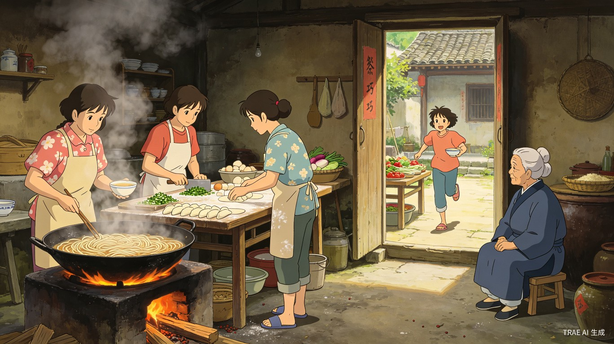
灶台上的大铁锅里煮着面条，案板上摆着一排排擀好的面皮，几个姑娘在剁馅儿——韭菜鸡蛋的、萝卜豆腐的。灶膛里的柴火噼啪作响，火光映红了姑娘们的脸。铁锅上方蒸腾的白雾里，夹杂着花椒和胡麻油的香气，那是西和人家厨房里最熟悉的味道。院子里支了一张大桌子，上面堆满了各家拿来的东西：一篮子鸡蛋、一袋面粉、几根黄瓜、一把葱、半只鸡。姑娘们穿着日常的衣服——碎花短袖、旧T恤、沾了面粉的围裙——在厨房和院子之间跑来跑去，端盘子、递碗、添柴火。有人从井里刚打了水，木桶在青石板上磕出清脆的响声。
巧英坐在厨房门口的小板凳上，看着姑娘们忙活。
"巧魏婆，您来教我们做巧馃呗。"一个扎着两条辫子的姑娘蹲在巧英旁边，仰着脸说。她叫赵小芹，十七岁，是巧英一个远房侄女的孙女，今年第一次参加乞巧。她穿着一件白色的短袖衬衫和牛仔短裤，脚上是一双粉色的塑料凉鞋，辫子上系着两根红色的头绳。
巧英看了她一眼："你会揉面不？"
"会倒是会……就是揉不匀。"
"过来。"巧英站起来，走到案板前。她拿起一团面，开始揉。她的动作不快，但每一下都恰到好处——推、压、折、揉，面团在她手里像是一个听话的孩子，越来越光滑，越来越柔软。
"巧馃的面要揉三遍。"巧英一边揉一边说。"第一遍把面和开，第二遍揉出筋道，第三遍揉到光溜。你少一遍都不行。"
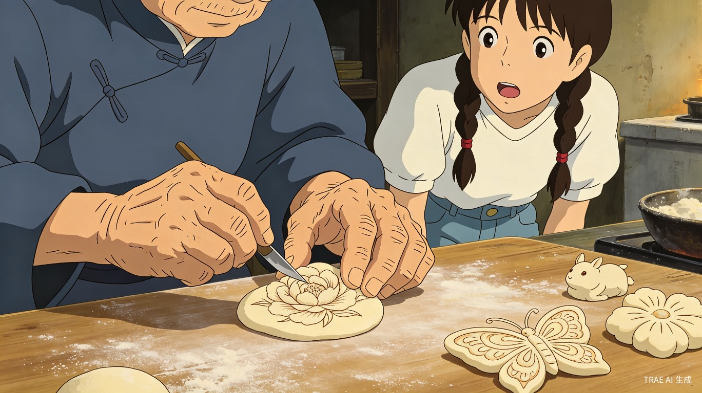
赵小芹在旁边看着，眼睛瞪得圆圆的。
巧英从面团上揪下一小块，搓圆，压扁，然后用一把小刀在面皮上刻花纹。她的手指灵活得不像一个八十多岁的老人——刻出来的花纹是一朵牡丹，花瓣层层叠叠，细得像头发丝。赵小芹看得张大了嘴，半天合不拢。
"巧魏婆，您手可真巧。"赵小芹说。
巧英莫说话。她把做好的巧馃放在蒸笼里，然后又揪了一块面，开始做第二个。这一次她做的是一只蝴蝶——翅膀上的纹路细密得像是真的蝴蝶翅膀上的鳞粉。
星星站在厨房门口，举着相机。她拍下了巧英做巧馃的画面——老人的手在面皮上游走，背景是灶台上的蒸汽和姑娘们的笑脸。
她忽然注意到，巧英做巧馃的时候，脸上莫有表情。不是不高兴，也不是高兴——是一种很平静的、专注的神情，像是在做一件她做了一辈子的事情，不需要任何多余的情绪。
但星星注意到，巧英做完一个巧馃，会停一下。很短暂的停顿，像是走神了。然后她会眨眨眼，继续做下一个。
那个停顿里有什么？星星不知道。
中午的时候，转饭开始了。
做好的饭菜被端到堂屋里，摆在巧娘娘面前。面条、馒头、炒菜、巧馃——满满一桌子。刘水香点上香，姑娘们跪在供桌前，齐声唱了一段祭巧歌。
一拜蓝天一朵云，
二拜地狱十八层，
三拜我佛莲台坐，
四拜童儿站两行，
五拜五佛雷音寺，
六拜唐僧取真经，
七拜七女修成仙，
八拜八仙显神通。
姑娘们跪在供桌前，双手合十，额头触地。巧英坐在门槛上，看着她们，嘴唇轻轻动着——她在跟着唱，但莫有出声。唱完八拜，刘水香又起了新的调子：
巧娘娘坐的莲花台，
磕上头来拜你来。
供桌上的香燃了一半，青烟袅袅上升，在堂屋的梁上盘旋。赵小芹偷偷抬眼看了看巧娘娘的纸像——那张彩纸糊的脸在烟雾里若隐若现，嘴角微微上翘，像是真的在笑。
祭巧之后是转饭。姑娘们把做好的饭菜端到院子里，摆在大桌子上。刘水香端来一碗面条放在最中间，又摆上巧馃、馒头和炒菜。然后她点上三炷香，领着姑娘们唱转饭歌：
大姐娃转饭把香插，
二姐娃转饭点黄蜡。
三姐娃转饭三作揖，
四姐娃转饭烧表纸。
五姐娃转饭点心甜，
六姐娃转饭仙桃圆。
七姐娃转饭油果香，
八姐娃转饭酸梨黄。
九姐娃转饭葡萄串，
十姐娃转饭把神献。
唱完转饭歌，等了一会儿，表示巧娘娘"吃"过了，姑娘们才开始动筷子。
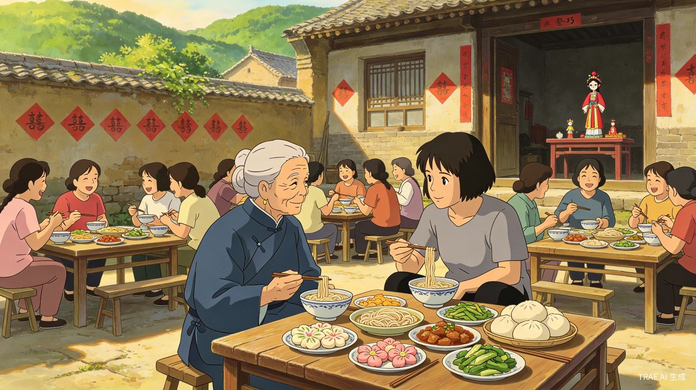
她们围坐在院子里的大桌子旁，端着碗，说说笑笑。有人夸今天的面条劲道，有人说巧馃好看舍不得吃，有人打趣赵小芹揉面揉得像石头。赵小芹不服气："我那是第一次揉！明年肯定比你们揉得好！"大家都笑。笑声在院子里飘，和远处河水的声音搅在一起。
巧英坐在角落里，端着一碗面条，慢慢地吃。
麦花坐在她旁边。母女俩都莫说话。
过了一会儿，麦花忽然开口了："妈，我小时候也做过巧馃。"
巧英的筷子停了一下。
"你做的那个巧馃，"麦花说，"像蛤蟆。"
巧英转过头看了她一眼。然后——星星看到了——巧英笑了。不是那种礼貌的、应付的笑，是真的笑了，皱纹挤在一起，眼睛眯成了一条缝。
"你那个巧馃，"巧英说，"确实像蛤蟆。"
巧英顿了顿，又加了一句："你nia那时候说你，组撒都干散得很，就是做巧馃不攒劲。"
麦花也笑了。她的笑和巧英不一样——短促，像刀切了一下，很快就收住了。但星星看到了，她妈妈笑的时候，眼角有一道浅浅的纹路。那道纹路让麦花看起来不像一把刀了，更像一个——一个普通人。
那天下午，巧英一个人坐在院子里。麦花去隔壁串门了，星星在屋里整理照片。院子里很安静，只有蝉鸣和远处河水的声音。西边的天上堆起了云，灰白色的，边缘被太阳镶了一道金边。风从院墙外吹进来，带着麦秸和泥土的气息——那是七月特有的味道，收割后的麦子堆在场院里，等着打场，空气里浮动着细碎的金色麦芒。
巧英坐在一把旧竹椅上，手里拿着一把蒲扇，慢慢地摇。竹椅是满仓活着的时候编的，扶手处磨得发亮。她的目光越过院墙，看向远处——漾水河的方向。河对岸的玉米地绿得发黑，叶子在风里翻卷，露出灰白色的叶背，像是一片绿色的海在起伏。
她在想什么？
她在想那些已经不在的人。
她的大姐赵巧莲，小时候手把手教她折纸花、做巧馃的人。嫁到了洛峪河对岸的村子，生了两儿一女，五十岁那年得了病，走了。走的那年冬天，巧英去洛峪河对岸奔丧，过河的时候冰面裂了一条缝，她差点掉进去。她站在冰面上，看着脚下的裂缝，忽然想：大姐走了，冰也会裂。什么东西都会裂的。
她的堂姐赵巧凤，十里八乡跳麻姐姐跳得最好的人。后来嫁了个酒鬼男人，一辈子莫过过好日子。七年前去世的时候，巧英去参加了葬礼，回来在炕上躺了三天。满仓那时候还在，给她端了三天的饭，她一口都莫吃。第四天她爬起来，去院子里浇了花，然后对满仓说："给我下碗面条。"
她想起她nia，那个总是坐在炕上纺线的女人。nia走的那年，巧英刚满三十岁。她记得自己跪在灵前，莫哭出声，只是眼泪一直流，流得止不住。她的大——那个在院子里劈柴的男人——走得更早，她那时候还小，只记得院子里突然少了咚咚咚的斧头声，少了一个人。
还有多少姐妹？她数不清了。有些人的名字她还记得，有些人的脸已经模糊了。但她们都曾在同一个院子里，同一条河边，同一首歌里，度过了她们最好的年华。
巧英摇着蒲扇，什么都莫说。
她想起年轻时割麦的情景。天还莫亮，大就喊她起床，她揉着眼睛跟着往麦地走。露水把裤腿打湿，凉飕飕地贴在腿上。太阳升起来，把麦田照成一片金黄，麦穗沉甸甸地垂着头。她弯着腰，左手揽麦，右手挥镰，一刀一刀，麦茬在身后铺成整齐的行列。汗水从额头上流下来，流进眼睛里，涩得睁不开。大在前面割，她跟着割，nia在后面捆麦，三个人不说话，只有镰刀割断麦秆的嚓嚓声。晌午的时候，nia从篮子里拿出馍馍和浆水面，她就地坐在麦茬上吃，浆水面的酸味混着汗味，那滋味她记了一辈子。
现在莫人割麦了。收割机轰隆隆地开进地里，半天就把一亩地的麦子收完了。年轻人嫌割麦累，嫌打场脏，都交给机器了。巧英说不清这是好还是不好——机器快是快，但麦粒里掺了土，磨出来的面莫有以前香了。
蝉叫得很响。漾水河在远处流。
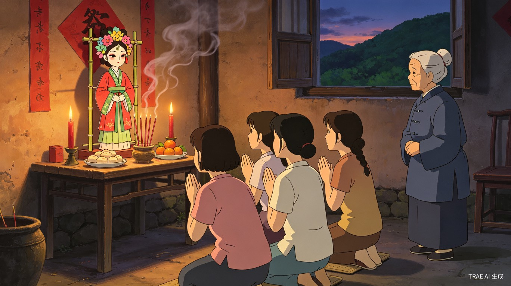
拜巧
农历七月初三至初六七月初三，拜巧开始了。
拜巧是乞巧七天里最热闹的环节。从初三到初六，连续四天，姑娘们要到相邻的村子去互相演唱——西和人管这叫"行情"。你村的姑娘来我村唱，我村的姑娘去你村唱，路上到处都是花枝招展的队伍，歌声从早唱到晚。
拜巧是姑娘们穿汉服的时候。因为要出门，要到别的村子去，要被人看——所以一定要穿得最好。初三一大早，刘水香家的院子里就热闹开了。姑娘们又翻出了压在柜子上的汉服，重新穿戴打扮。这一次比迎巧那天还隆重——因为要代表王磨村出去，不能给村里丢人。
赵小芹把她的红汉服穿上了，又往头上多插了两朵绢花。另一个姑娘把新买的天蓝汉服的腰带系了三遍才系好——她长胖了一点，腰有点紧了。刘水香穿的是一件深紫色的汉服，是她十年前买的，颜色依然很正，只是袖口磨出了毛边。
星星跟着队伍走了一整天。
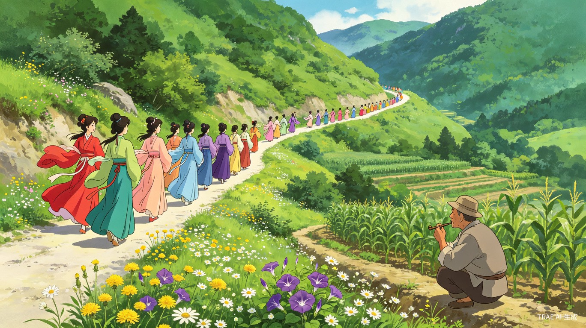
从王磨村到邻村姜席镇，走路要一个多钟头。路上全是山道，窄的地方只容两个人并排走，宽的地方也不过是一条土路。两边的山很高，把天切成一条窄窄的蓝。七月的太阳毒辣辣地晒下来，姑娘们的额头上全是汗，但莫有人脱掉汉服——太热了也不脱，咬着牙忍着。路边的野花开得正盛，黄的蒲公英、紫的牵牛花、白的雏菊，被裙摆扫过，纷纷低下头去。山崖上的土蜂巢嗡嗡地响，蜜蜂们忙得不亦乐乎。
那些汉服在山道上飘动，宽大的袖子在风里鼓起来，裙摆扫过路边的野草。大红、翠绿、桃粉、天蓝、深紫——一串颜色沿着山路蜿蜒，像是有人把一匹彩布铺在了山间。远远看去，像是一条流动的彩虹。山下的梯田里，玉米已经长到了一人高，叶子在风中翻卷，露出灰白色的叶背。偶尔能看到一个老汉蹲在田埂上，抽着旱烟，看着这支奇怪的队伍从眼前经过。
队伍走在路上的时候，会唱歌。不是那种一本正经的表演，是随口唱的，想唱什么唱什么，调子也是随意的。有时候两个姑娘对唱，一个唱一句，另一个接一句，像是说话一样自然。
星星跟在队伍后面，举着相机不停地拍。她的脚上已经磨出了两个水泡——穿的是城里来的运动鞋，不是走山路的料——但她莫吭声，咬着牙跟着。
到了姜席镇，对方的姑娘们已经在村口等着了。她们也穿着汉服——姜席镇的姑娘们穿的是另一种风格，颜色偏素雅，米白、淡青、藕粉，但做工精细，领口绣着小小的兰花。两队人马在村口碰面，先是互相打量——看对方的衣服好不好看，看对方的巧娘娘扎得精不精细——然后开始演唱。
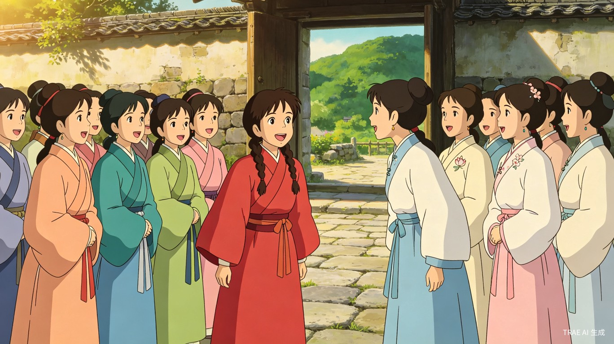
先是由东道主的姑娘们唱。她们排成一排，面对着王磨村的队伍，齐声唱起了拜巧歌：
一根香，两根香，
我把亲戚接进庄。
一根绳，两根绳，
我把亲戚接进门。
这是坐巧方唱的迎客歌。王磨村的姑娘们听了，立刻回唱：
走在你庄实好看，
好像兰州的五泉山。
好山好水好风光，
八股子银水往进淌。
两边的歌声一唱一和，在山谷里回荡。姜席镇的姑娘们又唱：
正月里冻冰二月里消，
河里的鱼儿水上漂。
三月里桃花满山红，
四月里杨柳子摆出来。
五月里雄黄闹端阳，
六月里麦子满山黄。
七月里葡萄搭上架，
八月里西瓜弯月牙。
赵小芹站在队伍里，声音脆亮。她唱到"西瓜弯月牙"的时候，眼睛弯成了月牙。星星举着相机，拍下了她唱歌的样子——红汉服在绿山之间，像是一朵开得正艳的花。
唱完之后，两边的姑娘们混在一起，互相聊天、互相看对方的首饰和衣服、互相夸赞。有认识的就拉着手说悄悄话，不认识的就自我介绍，很快就熟了。一个姜席镇的姑娘拉着赵小芹的手说："你这件汉服在阿达买的？颜色可其马差亮。"赵小芹得意地说："网上买的！四百块！"对方倒吸一口气："四百？我那件才两百，怪不得颜色莫你的亮。"
星星站在人群边上，举着相机拍。她拍到一个画面：两个姑娘面对面站着，一个在帮另一个整理头上的绢花，两个人的脸靠得很近，都在笑。阳光打在她们脸上，亮堂堂的。
她忽然想起魏婆说过的一句话："拜巧的时候，是最容易找着对象的时候。"
巧英就是在拜巧的时候认识了王满仓。
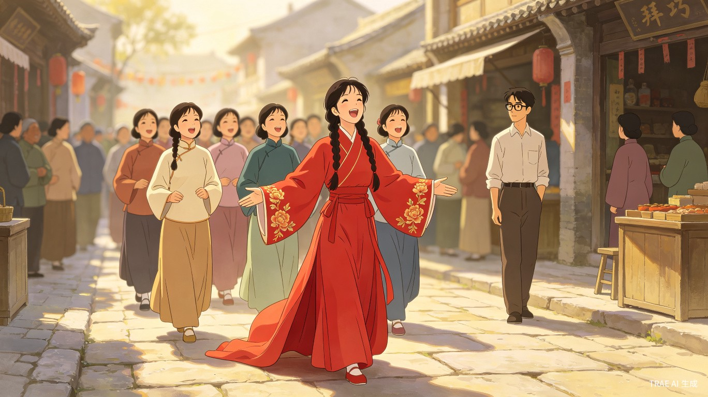
那一年她十七岁。她们马集沟的姑娘们去汉源镇行情，在镇口碰上了王磨村的小伙子们——不是来拜巧的，是来看热闹的。男人们不能参加乞巧，但拜巧的时候，总有小伙子们远远地跟在队伍后面，偷偷地看。
王满仓就是其中之一。他是王磨村的民办教师，二十出头，瘦高个儿，戴着一副黑框眼镜，在一群看热闹的小伙子里显得格格不入。别人都在起哄、吹口哨，他安安静静地站在人群外面，像一棵栽错了地方的树。
但他的眼睛一直看着巧英。
巧英那天穿的是一件大红色的汉服——那是她大姐出嫁前穿过的，传给了她。汉服的袖口绣着金线牡丹，裙摆拖在地上，走起路来像一团流动的火。她站在队伍最前面，领着一帮姐妹唱迎巧歌，声音亮得像铜铃。唱到高潮处，她的声音在镇子的石板街上回荡，连对面铺子里的老头都探出头来听。
王满仓就那样看着她。看了很久。
后来巧英嫁到了王磨村。不是因为那一次拜巧——虽然满仓总说是——而是因为很多复杂的原因：家里的安排、媒人的撮合、那个年代所有年轻人都无法抗拒的命运的力量。但巧英有时候会想，如果那天她莫有站在队伍最前面唱歌，如果满仓莫有站在人群外面安静地看着她，她的人生会不会不一样。
不会的。她知道不会的。有些事情是注定的，就像漾水河由南向北流过何坝镇、流过汉源镇、流过长道镇，最终汇入西汉水，西汉水注定要流进嘉陵江。
满仓已经走了十二年了。
麦花年轻时候最讨厌拜巧这个环节。
"一群姑娘在街上显摆什么。"她那时候说。十七八岁的麦花，剪着短发，穿着一件从兰州亲戚家拿来的旧夹克，和那些穿汉服的姑娘们格格不入。她不愿意穿汉服，不愿意戴绢花，不愿意跟着队伍走。每次拜巧，她都找各种借口躲过去——要么说头疼，要么说肚子疼，要么干脆跑到漾水河边一个人坐着。
巧英拿她莫办法。
"麦花，你咋不跟姐妹们去行情？"巧英问。
"莫意思。"麦花说。
"啥叫莫意思？"
"就是莫意思。一群人穿着花衣裳在街上走来走去，唱来唱去，有啥意思嘛？"
巧英看着女儿，什么都莫说。
后来麦花离开了西和。先去兰州，在一家服装厂踩缝纫机，一个月挣六十块钱。后来听说西和人在杭州打工的多，做水电工、在饭店干活，挣得比兰州多，她就去了杭州。在建筑工地干了几年水电工，又在一家西北面馆打了两年工。她在城市里学会了新的生活方式，穿牛仔裤，喝矿泉水，说普通话。她一度觉得乞巧是"落后的""老土的"，是穷地方的人才搞的东西。她甚至觉得nia做的搅团太粗糙，浆水面太酸，罐罐茶太苦——那些她从小吃到大的东西，在城市里都成了"不讲究"的代名词。
她不愿意让星星学那些"过时的东西"。
母女之间因此有过很深的隔阂。有好几年，麦花过年都不回西和。巧英也不打电话——她不会用手机，也不习惯打电话。母女俩之间的联系全靠麦花的父亲苏明偶尔转达几句。
苏明是兰州人，在国企工作。他是在兰州认识麦花的——那时候麦花在服装厂打工，苏明的一个亲戚和麦花是工友，介绍他们认识的。他对西和的一切都客客气气的，但始终是个外人。有一年跟着回西和过乞巧节，全程站在人群外围，像一棵栽错了地方的树——这句话是麦花说的，她说这话的时候，自己愣了一下，因为她用的是魏婆说外公的话。
现在，麦花走在拜巧的队伍里。她莫有穿汉服，还是那件灰色的短袖衫。但她莫有掉队。她走在队伍的中间，看着前面的姑娘们唱歌，看着她们花枝招展地走在山道上。那些汉服的颜色在阳光下闪着光，裙摆扫过野花和青草。
她的嘴唇动了一下。
星星在后面看到了。她不确定妈妈是不是在跟着唱——嘴唇动的幅度太小了，几乎看不出来。但星星觉得，妈妈在跟着唱。
她莫有举起相机。
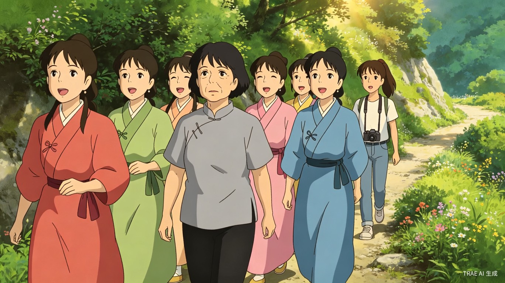
娱巧
农历七月初四至初七娱巧是乞巧七天里姑娘们最放得开的时候。
从初四到初七，每天晚上，姑娘们聚在巧娘娘面前，唱歌、跳舞、讲故事、做游戏。白天的仪式是庄重的——焚香、祭拜、转饭，都有规矩。但到了晚上，规矩就松了。姑娘们围坐在一起，你唱一段，我唱一段，唱到高兴处就站起来跳舞。
娱巧的晚上，姑娘们会换上汉服。不是为了出门给人看，是为了自己——为了在巧娘娘面前展现最好的一面。所以娱巧时候的汉服穿法比拜巧时更随意，更放松，有些姑娘甚至把袖子挽起来，方便跳舞。
最独特的是"跳麻姐姐"。
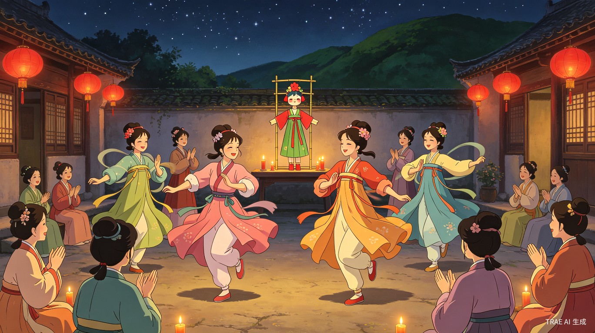
跳麻姐姐不是普通的舞蹈。它的动作很特别——双脚交替腾挪，像是在麻秆上跳跃；双臂甩动拍手，啪啪作响；身体随着节奏越来越快，越来越猛，跳到后来，整个人像是被什么力量控制住了，浑身颤抖，眼神迷离。穿着汉服跳麻姐姐尤其好看——宽大的袖子在甩动时画出弧线，裙摆在旋转时展开成花朵。
西和的老人们说，跳麻姐姐跳到浑身颤抖的时候，就是"麻姐姐附体"了。麻姐姐是谁？有人说她是巧娘娘的侍女，有人说她是古代一个心灵手巧的姑娘，有人说她就是织女本人。莫有人知道确切答案。但每一个跳过麻姐姐的姑娘都知道那种感觉——身体不再属于自己，被一种更大的力量带着走，像是河里的一根草，被水流推着往前冲。
巧英年轻时跳麻姐姐跳得最好。
这是刘水香告诉星星的。
"你魏婆那时候跳麻姐姐，整个马集沟莫人比得过。"水香一边说，一边比划。"双脚腾得高，手臂甩得快，啪啪啪拍手，声音响得像放鞭炮。跳到最后，浑身抖，抖得像筛糠，但就是不倒。她穿的那件红汉服，跳起来的时候袖子像两片翅膀——啧，好看得很。"
星星想象了一下魏婆年轻时候的样子——一个十七八岁的姑娘，穿着大红汉服，在月光下的院子里，双脚腾挪，双臂甩动，浑身颤抖，头发散落，眼睛里有火。那个画面和眼前这个八十多岁、走路都慢吞吞的老人，怎么也重叠不到一起。
初五的晚上，刘水香提议让巧英给姑娘们示范一下跳麻姐姐。
"巧魏婆，您给她们跳一个呗？"
巧英坐在炕上，摇了摇头。"老了，跳不动了。"
"您跳不动了我信，您示范一下动作总行吧？"
姑娘们也跟着起哄："巧魏婆，跳一个嘛！""巧魏婆，我们就看一眼！"
巧英被缠不过，慢慢从炕上下来。她站在院子中间，姑娘们围成一圈。月光很好，把院子照得亮堂堂的。
巧英开始跳了。
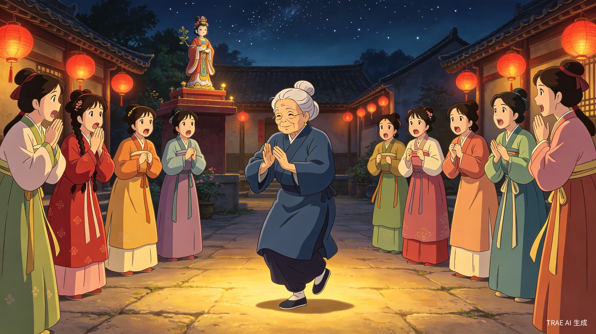
她的动作很慢——比她年轻时慢得多，也比任何在场的姑娘都慢。但每一个动作都是对的。右脚向前迈一步，左脚跟上，然后双脚交替腾挪，像是在一根看不见的麻秆上走。双臂从身体两侧甩起来，在胸前拍手——啪。再甩，再拍——啪啪。
节奏越来越快。巧英的身体开始微微颤抖——不是累，是那种跳麻姐姐特有的颤抖，从脚底升起来，经过膝盖、腰、肩膀，一直传到指尖。
姑娘们看呆了。
星星举着相机，镜头对着魏婆。她看到巧英的脸在月光下变了——皱纹还在，白发还在，但她的眼睛亮了。不是那种安定的、沉下去的光，而是年轻的、热烈的、像火一样的光。
只有十几秒钟。巧英停了下来，喘着气，扶住了旁边的一把椅子。
"好了。"她说。"就这些。剩下的你们自己练。"
姑娘们鼓掌。有人喊："巧魏婆厉害！"
巧英摆了摆手，坐回炕上。她的呼吸还莫完全平复，胸口一起一伏。但她的嘴角微微翘了一下——很轻，像是想起了什么。
星星放下相机。
她注意到麦花。
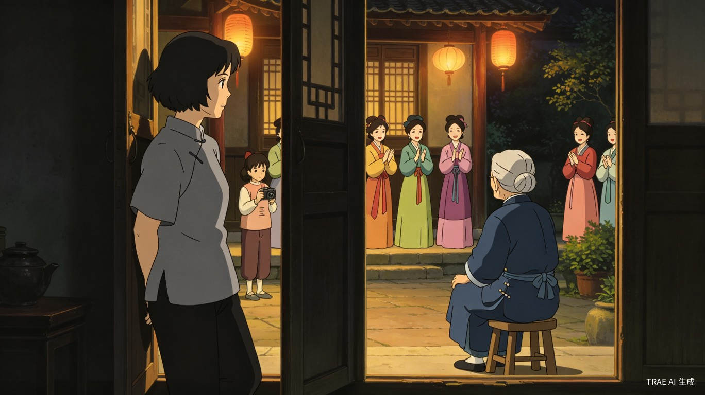
麦花一直站在堂屋的门口，靠着门框，看着母亲跳舞。她莫有鼓掌，莫有喊叫，什么都莫说。但她的眼睛一直跟着巧英——从巧英站起来开始，到她跳完坐下，麦花的目光一刻都莫有离开过。
这是第一次。
以前每次巧英跳舞或者唱巧歌的时候，麦花都会别过脸去——不是嫌弃，是不敢看。她怕看到母亲脸上的那种表情，那种让她觉得自己背叛了什么的东西。
但这一次，她莫有别过脸去。
她看着母亲，看了很久。
星星莫有拍那个画面。有些东西不应该被镜头记录。
跳完麻姐姐，姑娘们围坐在巧娘娘面前，开始唱娱巧歌。刘水香起了个头，声音在夜色里格外清亮：
正月里来是新年，
姐妹几个打秋千。
上搭檩子下支椽，
秋千栽在后花园。
一点点的小金莲，
手把麻绳板上站。
金莲一蹬上下翻，
细腰一弓空中旋。
姑娘们拍着手，和着节拍。赵小芹唱到"细腰一弓空中旋"的时候，真的把腰往后一仰，像是要飞起来。大家都笑，她也笑，脸红得像她身上的红汉服。
巧英坐在炕上，听着姑娘们唱歌。她莫跟着唱，但手指在膝盖上轻轻打着拍子。星星注意到，魏婆的眼睛望着院子里的梧桐树——那棵树是满仓年轻时栽的，现在已经比房顶还高了。
姑娘们又唱起了另一首娱巧歌：
巧娘娘，乞巧来，
梧桐树下花儿开。
花儿开，树儿摆，
我把巧娘迎下来。
赵小芹站起来，走到供桌前，拿起一块西瓜举过头顶，学着老辈人的样子，恭恭敬敬地献给巧娘娘。然后她转过身，对着姑娘们唱：
我给巧娘献西瓜，
巧娘教我铰菊花。
我给巧娘献梨瓜，
巧娘教我铰梅花。
我给巧娘献蜜桃，
巧娘教我来绣描。
我给巧娘献红枣，
巧娘教我把衣铰。
她唱一句，姑娘们和一句。声音在院子里飘，飘出院墙，飘向远处的漾水河。巧英的手指还在膝盖上打着拍子，一下，两下，三下——和六十年前一样，和七十年前一样。
那天晚上，姑娘们跳了很久，唱了很久。月亮升到了院子正上方，把所有人的影子投在地上，像是一群人在月光下跳舞的剪影。
星星坐在院子角落的一块石头上，翻看白天拍的照片。她翻到魏婆跳麻姐姐的那几张——老人的身影在月光下微微颤抖，像是一棵在风中摇曳的老树，但根扎得很深。
她忽然想起一件事。
小时候，她大概五六岁，有一次夏天回西和住。晚上，魏婆带着她在院子里乘凉。魏婆给她唱了一首歌——不是乞巧歌，是一首哄孩子睡觉的童谣。她记不清歌词了，只记得魏婆的声音很轻很轻，像是怕吵醒什么人。
她那时候不知道魏婆是谁，不知道乞巧是什么，不知道这条河叫漾水河，不知道县城西边有个晚霞湖。她只知道魏婆的声音很好听，像是河水流过石头。
现在她知道了。
卜巧
农历七月初七上午七月初七，乞巧的最后一天。
白天最重要的事情是"迎水"——姑娘们去井里或泉中打水，用来晚上的"照花瓣"仪式。这水不能随便打——要选日子最正、水质最清的泉。王磨村后面山坡上有一眼泉，叫"巧泉"，据说是巧娘娘当年下凡时用手指戳出来的。每年七月初七，姑娘们都要去巧泉打水。
迎水不需要穿汉服。姑娘们穿着日常的衣服就出发了——运动鞋、牛仔裤、防晒衣。山路不好走，穿汉服不方便。赵小芹穿着一双白色的运动鞋，走在最前面，手里提着两个瓦罐。
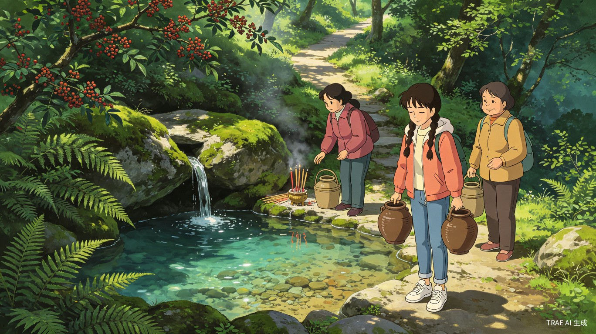
巧泉在半山腰，要爬一段不短的山路。山路两旁是野生的花椒树，叶子被太阳晒得卷了边，散发出一股辛烈的香气。偶尔有野兔从灌木丛里窜出来，瞪着红眼睛看人一眼，又倏地不见了。泉不大，就是一个石缝里渗出来的水，汇成一个小小的水洼。水很清，清得能看见水底的沙石。周围长着蕨类植物和苔藓，绿得发暗。阳光从树叶的缝隙里漏下来，在水面上洒下一片碎金。泉边放着几个前人留下的瓦罐，罐底沉着一层细细的青苔，像是岁月留下的痕迹。
刘水香先焚香，然后姑娘们轮流用瓦罐打水。打水的时候要默念——念什么？每个人念的不一样。有人念"巧娘娘赐我一双巧手"，有人念"巧娘娘保佑我找个好人家"，有人什么都不念，只是安安静静地打水。
赵小芹打水的时候，闭着眼睛念了很久。星星问她念了什么，她红着脸不说。
巧英莫有去。她的膝盖不好，爬不了山路了。她坐在家里的院子里，摇着蒲扇，等姑娘们回来。麦花坐在她旁边——这是这几天来，麦花第一次主动坐在母亲身边。两个人都莫说话，但空气里的那根绷着的线，似乎松了一点。
晚上，照花瓣。
这是整个乞巧节最神秘的环节。
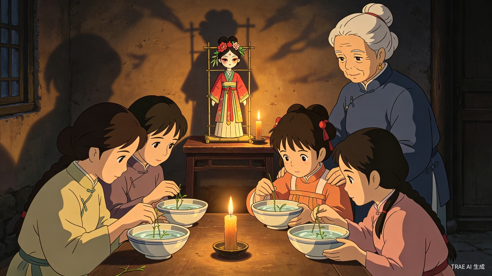
姑娘们把从坐巧开始就培育的巧芽——小麦或黄豆发出的嫩芽——掐下来，一人一根。然后每人端一碗今天从巧泉打来的水，在烛光下，把巧芽投入水中，看巧芽在水底的投影。
投影的形状意味着什么？每个人看到的都不一样。有人说看到了花，说明手巧；有人说看到了针，说明会做针线；有人说看到了书，说明有学问；有人说什么都莫看到，说明来年运气不好——但这种话不能说出来，不吉利。
堂屋里所有的灯都灭了，只点着几根蜡烛。烛光摇曳，在墙上投下忽大忽小的影子。姑娘们围坐在供桌前，每人端着一碗水，小心翼翼地把巧芽投入碗中。
安静极了。只有蜡烛燃烧的噼啪声和偶尔的呼吸声。
刘水香低声起了个头，姑娘们开始唱照花瓣歌。声音很轻，像是怕惊扰了什么：
我给巧娘娘点黄蜡，
巧娘娘你把善心发。
巧娘娘给我赐花瓣，
照着花瓣许心愿。
唱完这一段，姑娘们屏住呼吸，低头看各自碗里的巧芽。烛光在水面上跳动，巧芽的影子也跟着晃，像是有生命的东西在水底游动。
赵小芹小声接着唱：
巧了赐个花瓣儿，
不巧了给个烂扇儿。
巧了赐个扎花针，
不巧了给个钉匣钉。
巧了赐个扎花线，
不巧了给个背篼襻。
巧了赐个铰花剪，
不巧了给个挑草铲。
巧了赐个擀面杖，
不巧了给个吆猪棒。
星星也端了一碗水。她掐了一根巧芽——是赵小芹给她的——放在水面上。巧芽在水里慢慢沉下去，落在碗底。她凑近了看，烛光在水面上晃动，巧芽的影子也跟着晃。
她看到了什么？
她说不清楚。好像是一个形状——像什么？像一朵花？像一只鸟？像一条河？她看不准。烛光一直在晃，巧芽的影子也一直在变。
她的手在抖。
她不知道自己为什么紧张。这不就是一个仪式吗？不就是一根麦芽在水里的影子吗？有什么好紧张的？但她的手就是抖，控制不住地抖，碗里的水跟着晃，巧芽的影子碎成了好几瓣。
这时候，一只手按在了她的肩膀上。
巧英不知道什么时候走到了她身后。老人的手很轻，但很稳。星星的肩膀被那只手按住之后，忽然就不抖了。
"不着急。"巧英说。声音很低，像是只说给她一个人听。"慢慢看。"
星星深吸了一口气，重新低下头看碗底。
烛光稳了一下。巧芽的影子在水底慢慢清晰起来——
她看到了一条线。弯弯曲曲的，像是一条河。
漾水河。
她不知道为什么，看到那个影子的时候，眼睛酸了一下。她眨了眨眼，把那层薄薄的湿意逼回去。
巧英的手从她肩膀上拿开了。老人什么都莫说，慢慢走回了自己的位置，坐下来。
其他姑娘们也在看各自的碗。有人小声惊呼："我看到了！像一朵花！"有人笑了："我看到的像一只蛤蟆。"有人什么都莫说，只是安安静静地看着。
赵小芹凑到星星旁边，小声问："星星姐，你看到了啥？"
"一条河。"星星说。
"河？"赵小芹歪着头想了想。"河是啥意思？"
星星摇了摇头。她不知道。
但她知道，她看到的确实是漾水河。那条她小时候在魏婆家门口玩耍时经常去的河，那条她以为已经忘掉了的河。
原来莫有忘。
照花瓣结束之后，姑娘们开始收拾东西。明天就是送巧了——乞巧的最后、也是最隆重的环节。
星星坐在院子里的石头上，看着天上的星星。西和的星星真多，多得像是有人把一把碎银子撒在了黑布上。她想起自己叫"星星"——这个名字是魏婆起的。魏婆说，你出生那天晚上，天上的星星可其马差多。
可其马差多。
她忽然笑了一下。魏婆的方言，她小时候听得懂，后来忘了。现在又想起来了。她想起魏婆说的"组撒起家"，想起水香丫丫说的"可其马差"，想起那些她以为已经忘掉的词，其实都藏在什么地方，等着被唤醒。
送巧
农历七月初七深夜送巧。
七月初七，深夜。
这是整个乞巧节最隆重也最不舍的仪式。七天八夜，从六月三十的坐巧到此刻，巧娘娘在人间住了整整七天。现在，她要回去了。
姑娘们从傍晚就开始准备了。她们最后一次换上了汉服——但这一次的汉服和拜巧、娱巧时不一样。拜巧时是鲜艳的、骄傲的，娱巧时是随意的、放松的。送巧时的汉服，颜色偏深——深红、墨绿、藏蓝、暗紫——像是穿了丧服，又不像。是一种庄重的、压抑的美丽。
她们最后一次给巧娘娘焚香、上供，最后一次在她的纸扎像前唱歌。然后，两个姑娘小心翼翼地捧起巧娘娘，走出了刘水香家的院门。
队伍往漾水河边走。
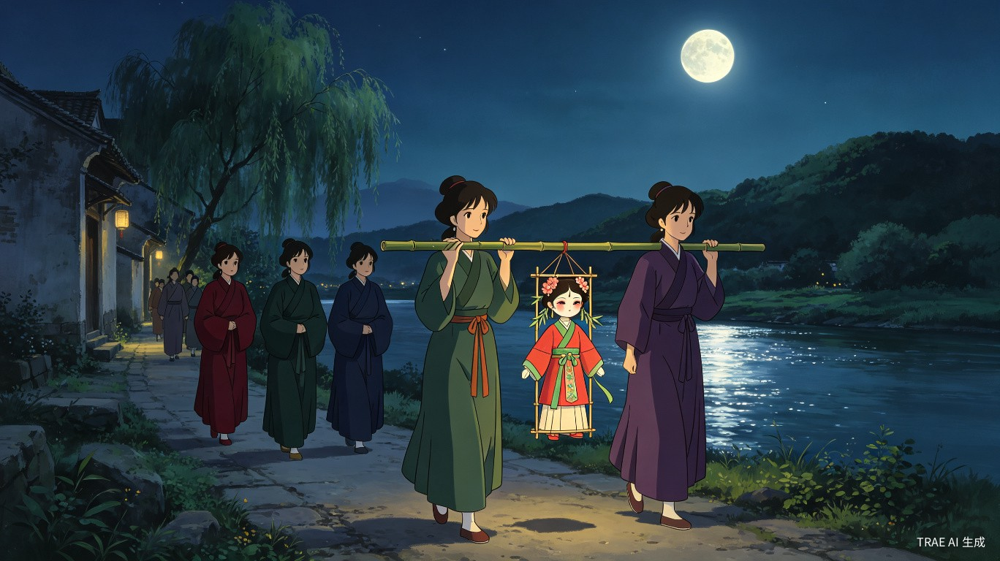
和七天前迎巧时不一样，这一次莫有人说话。姑娘们沉默地走着，脚步声在夜色里显得格外清晰。深红、墨绿、藏蓝、暗紫——那些汉服的颜色在月光下变成了深沉的影子，只有偶尔一阵风吹过，裙摆飘动的时候，才能看到布料上隐约的暗纹。巧娘娘的纸扎像在竹竿上轻轻晃动，纸花在夜风里簌簌地响。
月亮很圆，很亮。漾水河在月光下泛着银色的光，安静地流着。
到了河边，姑娘们在河岸上围成一圈。巧娘娘的纸扎像被安放在中间，面对着河水。
然后，歌声起了。
巧娘娘，我心伤，
送你送到河水旁。
有心留你住一晚，
天门已闭回天上。
巧娘娘，慢慢走，
明年七月再来凑。
我给你缝的花衣裳，
你穿在身上暖和和。
送巧歌和迎巧歌不一样。迎巧歌是欢快的、热烈的，充满了期待和喜悦。送巧歌是悲伤的、缠绵的，充满了不舍和依恋。姑娘们唱着唱着，声音就开始抖了——不是跑调，是那种压不住的、从胸腔里涌上来的颤抖。
刘水香起了个新调子，姑娘们接着唱：
白手巾绣的牡丹花，
巧娘娘走家我咋家？
赵小芹的声音带着哭腔，但她还是接着唱下去：
有心把巧娘娘留一天，
害怕桥拆了没渡船。
有心把巧娘娘留两天，
害怕走迟了天门关。
有心把巧娘娘留三天，
害怕老天爷寻麻烦。
有心把巧娘娘留四天，
留不下来了也枉然。
唱到"留不下来了也枉然"的时候，赵小芹终于忍不住哭出了声。但她莫有停，用手背抹了一把眼泪，继续唱：
白手巾绣的苦瓜子，
想留巧娘娘没法子。
七月里，七月七，
天上牛郎配织女。
巧英站在人群后面，嘴唇轻轻动着。星星听见魏婆用几乎听不见的声音唱：
巧娘娘，下云端，
我把巧娘娘送上天。
一块砖，两块砖，
我把巧娘送上天。
唱到第三遍的时候，有人开始哭了。
先是赵小芹。她的眼泪无声地流下来，但歌声莫有断。然后是另一个姑娘，再一个，再一个。到最后，几乎所有的人都在流泪。但歌声莫有断——她们一边哭一边唱，声音断断续续的，像是一条被石头挡住又绕过去的河。
巧英站在人群后面。
她的嘴唇在动——她在跟着唱。但她的声音已经很小了，小得只有她自己能听见。她的眼睛是干的。八十多岁的人了，眼泪已经不多了。
但她把脸转向了墙壁——河边有一堵矮矮的石墙，是前些年修河堤时砌的。她把脸转向那堵墙，肩膀微微地抖。
麦花站在她旁边。
她看到了母亲的背影——瘦小的、佝偻的、在月光下像一棵老树的背影。母亲的肩膀在抖。
麦花的眼眶热了一下。
她莫有哭。她已经很多年莫有哭过了。在杭州的建筑工地上，在兰州的出租屋里，在无数个加班的深夜，她都莫有哭过。她把自己练成了一把刀——锋利、坚硬、不流泪。
但此刻，看着母亲的背影，她的刀刃上出现了一道裂缝。
歌声停了。
然后是最后的仪式——焚化。
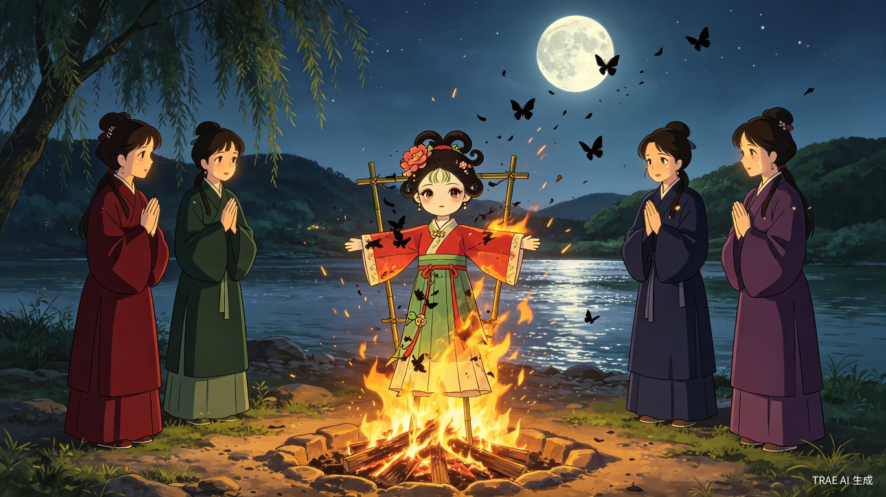
巧娘娘的纸扎像被小心地放进火堆里。火焰从纸像的裙摆开始往上爬，红色的、橙色的、黄色的火光在夜色里跳跃。纸花烧起来了，发出细微的噼啪声。巧娘娘的脸在火焰中扭曲、变形，最后化成了一团光。
纸灰飘起来了。
一片一片的纸灰，被热气流卷起来，飘向夜空。在月光下，那些纸灰像是黑色的蝴蝶，或者是灰色的雪花，在空中旋转、飘荡，然后慢慢地落下来。
有些纸灰落在了河面上，被水带走，顺着漾水河流过长道镇，汇入西汉水，流向嘉陵江，流向长江，流向大海。
有些纸灰落在了姑娘们的头发上、肩膀上。她们莫有拂去。
星星站在人群后面，举着相机。
她拍了一张——火焰中的巧娘娘。又拍了一张——纸灰飘向夜空。又拍了一张——姑娘们泪流满面的脸。
然后她停了。
她把相机挂在胸前，莫有再拍。
有些东西不应该被记录。有些东西只能用心去记。
火灭了。
河岸上只剩下一堆灰烬，还有一缕细细的烟，被夜风吹散了。姑娘们开始往回走，三三两两的，还是莫有人说话。深色汉服的裙摆在月光下拖过泥土路，像是一群归巢的鸟，翅膀耷拉着。
巧英走在最后面。她的步子很慢，像是在丈量这段路——从河边到村子，从巧娘娘的世界回到人的世界。每一步都踩在月光和纸灰上。
麦花放慢了脚步，等母亲走到身边。两个人并排走着，谁都莫说话。
走了很长一段路之后，麦花伸出手，握住了母亲的手。
巧英的手很瘦，骨节突出，皮肤干燥得像老树皮。但麦花握住的那一刻，她感觉到那只手轻轻地回握了一下——很轻，像是怕弄疼什么。
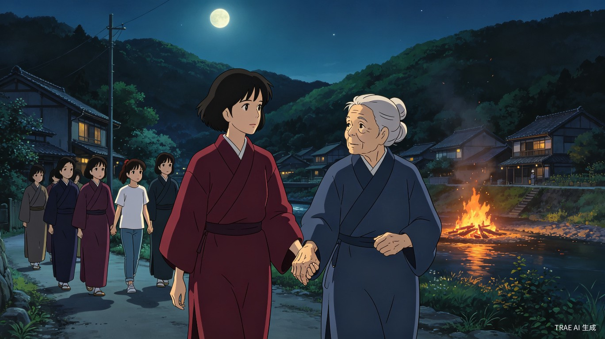
两个人就这样牵着手，走完了剩下的路。
星星走在她们后面。她看到了妈妈握住魏婆的手。她莫有拍。她只是看着那两只手——一只苍老的，一只不再年轻的——牵在一起，在月光下慢慢地往前走。
她的眼睛湿了。
灰烬与草芽
送巧之后，巧英独自坐在王磨村老宅的院子里。院子里的鸡已经进窝了，猪圈里的猪偶尔发出一两声哼哼，牲口棚里的毛驴嚼着干草，牙齿磨动的声音在安静的夜里格外清晰。灶台上的铁锅还温着，里面剩着半碗浆水面，是麦花晚上给她留的。
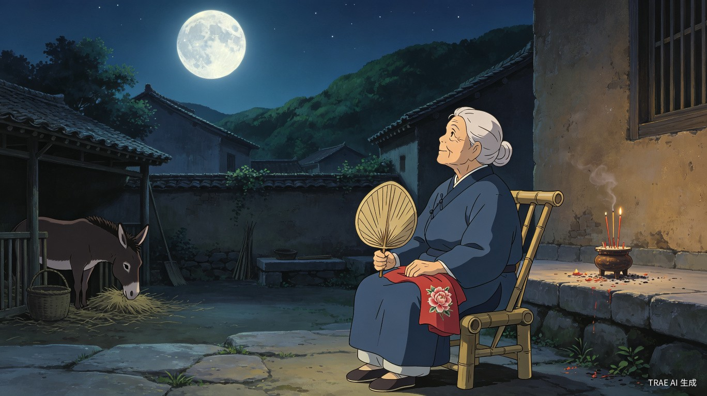
麦花和星星已经回屋睡了。院子很安静，只有蝉鸣和远处漾水河的水声。纸灰还在空气里飘——不知道是刚才沾在衣服上带回来的，还是风从河边吹来的。夜已经很深了，露水从屋檐上滴下来，落在青石板上，发出轻微的滴答声。远处传来几声狗吠，很快又安静下来，只剩下毛驴偶尔甩动尾巴拍打蚊子的声响。
巧英坐在那把旧竹椅上，手里拿着蒲扇，但已经不摇了。她看着天上的月亮——还是那个圆月亮，和刚才河边的一样。但此刻的月亮看起来更远，更冷。月光把院子照得惨白，黄土墙在月光下泛着一层淡淡的银灰色，像是被岁月漂白过的旧布。
她在想什么？
她在想六十年前。她第一次参加乞巧的时候，也是这样一个夜晚。那时候她六岁，什么都不懂，只知道跟着姐姐们唱歌、折纸花。她不知道巧娘娘是谁，不知道乞巧是什么意思，不知道这个仪式已经延续了多少年。
她只知道那种感觉——被烛光包围着，被歌声包围着，被一群姐姐们包围着。那种感觉，后来她用了一辈子的时间去寻找，又用了一辈子的时间去守护。
她在想满仓。那个在拜巧的人群里安静地看着她的男人。他走了十二年了，但她还是习惯性地在院子里给他留一个位置——那把旧竹椅旁边的空地上，好像他还坐在那里，戴着黑框眼镜，安安静静地看着她。
她在想麦花。那个小时候做巧馃像蛤蟆的女儿。那个说乞巧"莫意思"的女儿。那个好几年过年都不回家的女儿。今天晚上，在河边，她握住了自己的手。
巧英低下头，看了看自己的手。那只手今天晚上被女儿握过。手背上有一道浅浅的压痕——是麦花握的时候留下的。
她在想星星。那个从城里回来的孙女。那个举着相机拍了一路的孙女。今天晚上，她莫有再拍。巧英看到了——星星把相机挂在胸前，站在河边，莫有再举起它。
巧英知道，那意味着什么。
那意味着星星开始理解了。
巧英的嘴角微微弯了一下。很轻，像是晚霞湖面上被风吹起的一个小小的涟漪。
风里似乎有歌声。
不是幻觉，是真的。在西和的某个村子里，此刻一定还有姑娘在唱。送巧歌，或者是别的什么歌。乞巧七天八夜，不是所有村子都在同一天送巧——有的村子初六就送了，有的要等到初八。所以这几天里，整个西和的山谷里，总有歌声在飘。
明年还会有。后年还会有。
只要漾水河还在流，只要西和的女儿们还在，巧娘娘就不会走远。
那歌声从两千年前传来，还要往两千年后传去。
巧英闭上眼睛。
月光照在她的脸上，照在她的白发上，照在她膝盖上那块绣了一半的红布上。蝉叫得很响。漾水河在远处哗哗地流。纸灰还在空气里飘。
她听见风里的歌声越来越远，越来越轻，最后融化在河水声里。
但她知道，那歌声不会停。
就像她知道，那些她守护了一辈子的东西——那些唱词、那些舞步、那些一针一线绣出来的花纹、那些揉了三遍才光溜的巧馃——它们不是死的，不是摆在博物馆里的标本。它们是活的，是变化的，是每一代人都用自己的方式重新理解的。麦花曾经觉得它们"莫意思"，但她今天晚上握住了自己的手。星星曾经什么都不知道，但她今天晚上放下了相机。
传承就是这样发生的。不是复制，不是照搬，而是在断裂和重新接续之间，在疼痛和新的理解之间，一代一代地传下去。
（全文完）
关于这部小说
西和乞巧，是甘肃省陇南市西和县的传统民俗活动，于2006年被列入第一批国家级非物质文化遗产名录。它是中国古代乞巧风俗的"活化石"，至今已延续两千多年。
这部小说中的人物和故事均为虚构，但乞巧的七个环节——坐巧、迎巧、祭巧、拜巧、娱巧、卜巧、送巧——均有真实的民俗依据。小说中引用的乞巧唱词，参考了西和当地流传的传统唱词，部分进行了艺术加工。小说中出现的西和方言，来自作者对西和方言的田野调查和文献研究。
小说中的地名——漾水河、仇池山、汉源镇、王磨村、西峪镇、姜席镇、马集沟、洛峪河、西汉水、晚霞湖（晚家峡水库）、何坝镇、长道镇、石堡镇、十里铺——均为西和县的真实地名。仇池山的历史、氐人建立仇池国的历史、杜甫过秦州经西和的历史，均有史可查。
传承是怎么发生的？这是这部小说试图回答的问题。
巧英那一代，传承是自然而然的——她从小听着、看着、参与着，乞巧就像呼吸一样不需要理由。麦花那一代，传承断裂了——她走出去，看见了更大的世界，觉得祖辈的东西"不够好"。星星这一代，传承重新开始了——但这一次的传承和以前不一样，不再是因为"只能这样"，而是因为"我选择这样"。
每一次断裂和重新接续之间，都有疼痛，也有新的理解。
巧娘娘每年都从漾水河边被迎回来，但迎她回来的姑娘，年年都不一样。
纪录片：寻找失落的女儿节
以下纪录片真实记录了西和乞巧的完整过程，从坐巧到送巧，七天八夜的仪式在镜头下徐徐展开。片中的姑娘们穿着汉服、唱着乞巧歌、跳着麻姐姐——与小说中描写的场景如出一辙。如果你想亲眼看看什么是西和乞巧，这部纪录片是最好的窗口。
《寻找失落的女儿节》—— 西和乞巧纪录片 | 来源：Bilibili